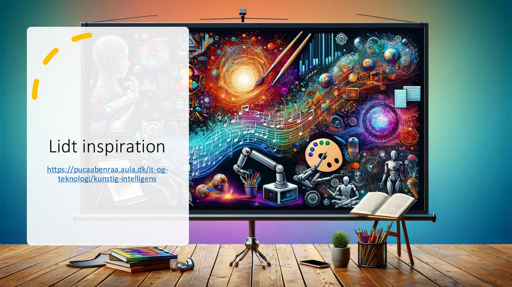
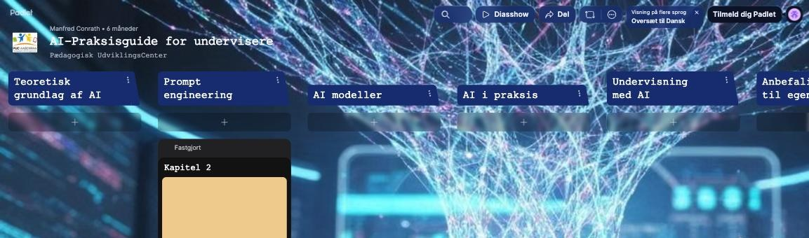
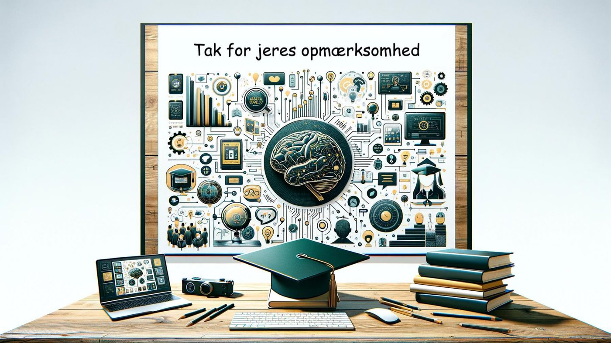

AI-værktøjer efter kategori
En kategoriseret oversigt over værktøjer, samlet af Manfred Conrath på Padlet (padlet.com/ManfredC/ai):
| Kategori | Værktøjer |
|---|---|
| GPT | ChatGPT, SkoleGPT, DanskGPT, Perplexity |
| Tekst | SkrivSikkert |
| Lyd | Elevenlabs, Suno, Udio |
| Video | Tegnemaskinen |
| Syn | Be My Eyes, Lookout |
| Søgning | BingChat, FutureTools, EcosiaChat |
| Maskinlæring | Teachable Machine |
Hele kursusmaterialet, inklusive alle 7 kapitler og supplerende ressourcer (bl.a. "How People Use ChatGPT", en model-oversigt, kildekritisk søgning og IT-strategien), findes samlet i AI Praksisguiden på Padlet.

Værktøjer til at afprøve med det samme
- Gliglish (gliglish.com): træn virkelighedsnære sprogbrugssituationer med en AI-lærer. Vælg mellem 22 sprog og en konkret situation (fx en restaurant), eller tal frit med en lærer, der hjælper dig med at forbedre sproget. Kræver ingen registrering eller login.
- Skoletube har flere AI-understøttede værktøjer indbygget: WeVideo (manuskript, storyboard og evt. billedgenerering til video), Book Creator (AI-tekst og billeder til interaktive bøger), CoSpaces (AI-understøttet idéudvikling og 3D-figurer/scener), Pixton (tegneserier af AI-genererede historier), Thinglink (gør AI-billeder interaktive med hotspots) og Prezi (visuel præsentation af AI-skabt indhold).
Læs mere
"100 idéer til ChatGPT" (Ole Ditlev Nielsen, Forlaget 20 Skridt) giver eksempler på ChatGPT som personlig coach: selvrefleksion, tidsstyring, vaner, motivation, sundhed, privatøkonomi, "dit personlige universitet" og virtuel assistent til hobbyer.
Boganbefalinger
- "Kunstig intelligens: Kunstens storhed eller fald?" (Christian Have): AI's indflydelse på kunst og kultur.
- "AI Epoken" (Anders Bæk, forord af Martin Thorborg): Hvordan AI vil forme fremtiden, positivt og negativt.
- "Kunstig intelligens bagfra" (Anders Søgaard): Et teknisk og samfundskritisk blik på algoritmer, data og ulighed.
- "Maskiner der tænker" (Inga Strümke): AI's historie, nøglebegreber, potentiale og risici.
- "Maskinerne kommer indefra" (Anders Søgaard): Hvordan AI påvirker os socialt, etisk og praktisk.
- "Hvad skal vi med mennesker?" (Peter Svarre): AI's etiske og samfundsmæssige konsekvenser for arbejde, relationer og identitet.
Kurser hos PUC Aabenraa
PUC Aabenraa udbyder flere relaterede kurser: AI i undervisningen, Office 365, Robotter og programmering, Meddelelsesbogen, Meebook, Samarbejdskultur (SharePoint/Teams) samt bookning i Grejbanken.
Manfred Conrath, Pædagogisk konsulent, PUC Aabenraa
Tlf. 7376 8039 · mconr@aabenraa.dk
pucaabenraa.dk
Saml gerne en gruppe undervisere fra din skole, en afdeling eller på tværs af hele skolen.
